One USB stick turns any PC into a complete offline library: Wikipedia's medical encyclopedia, 30 illustrated first-aid cards, military field manuals, maps, and a private AI that answers from all of it. No internet. No cloud. No signal needed.
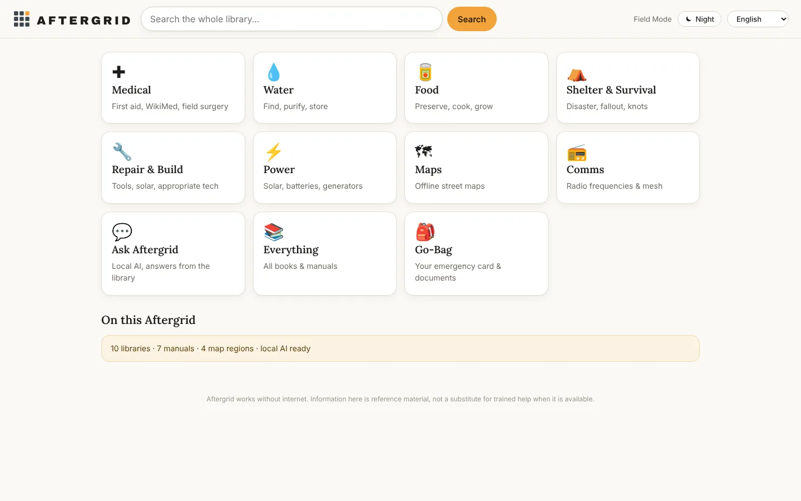
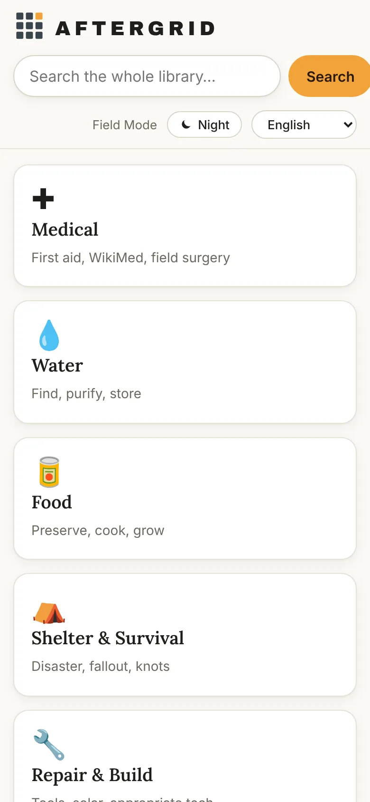
Aftergrid runs a private AI model on the computer itself. It doesn't guess from the internet. It searches the library on the stick, reads the relevant pages, and answers in plain language, with numbered sources and the matching diagrams.
A Qwen3 model runs on the computer's own processor. No account, no signal, nothing leaves the machine. PCs with 14 GB+ of memory can add a larger, sharper model.
Answers cite numbered sources from the library. Tap one and the original page opens with the exact passage highlighted.
Doses, drops, minutes: if a figure in the answer isn't in the sources, Aftergrid flags it so you check before you act.
Medical answers come with the matching first-aid illustration, while the answer is still being written.
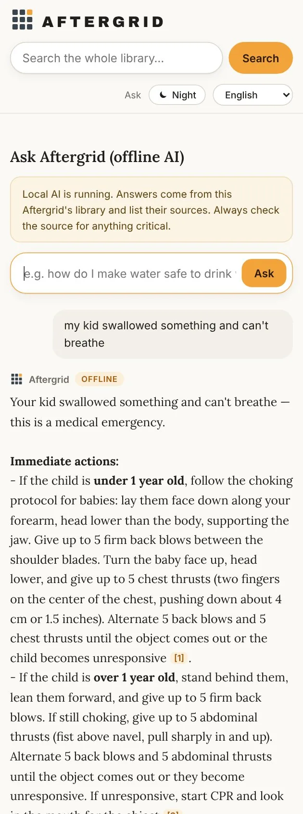
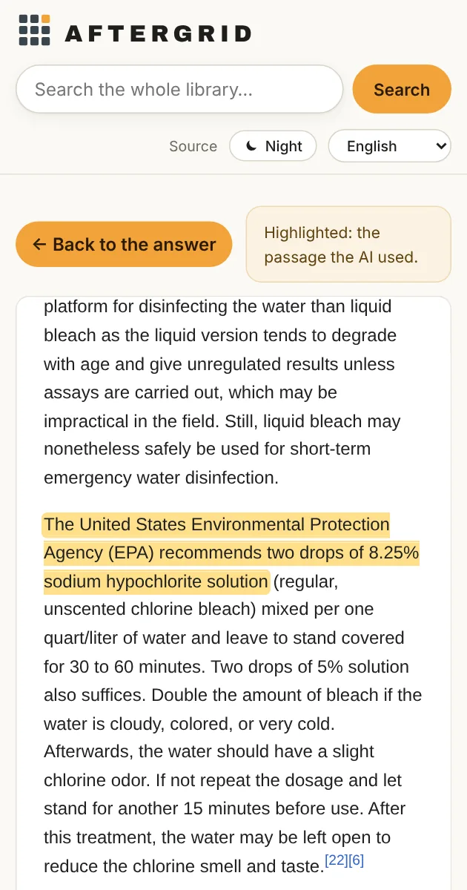
The medical side of Wikipedia comes on the stick, complete with images. The rest of English Wikipedia is a one-click add-on in setup, so it's saved before you ever need it.
Every medical article on Wikipedia, with images: conditions, drugs, procedures, anatomy. Searchable, offline.
Every article, saved to your stick. Choose the 12 GB edition (each article's summary and key facts, fits a 32 GB stick) or the complete edition with images on a larger drive.
Greek Wikipedia, a summary of every article, built in. More languages and the full Greek edition are available in setup.
One search box covers everything at once. Add iFixit repair guides, Stack Exchange (outdoors, DIY, ham radio, gardening), Wikibooks, Wikivoyage and LibreTexts medicine from setup when you have a connection.
Short numbered steps. When to get help urgently. What not to do. A clear drawing. Each card names the guideline it's based on: Red Cross, WHO, CDC, European Resuscitation Council and others.
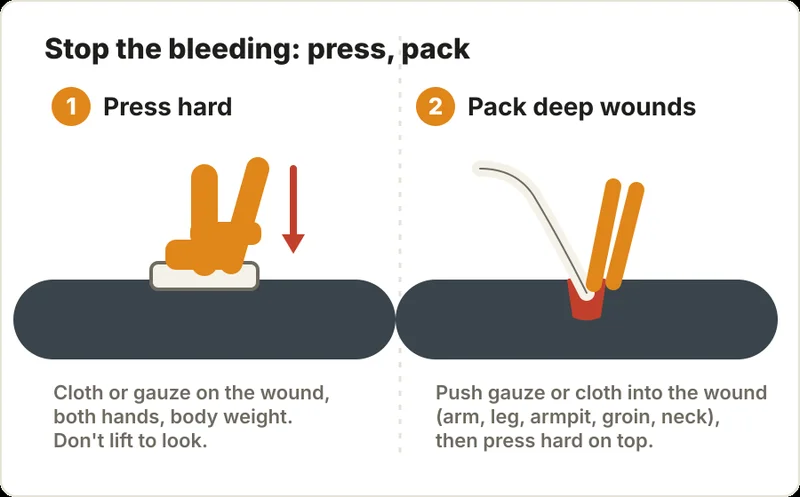
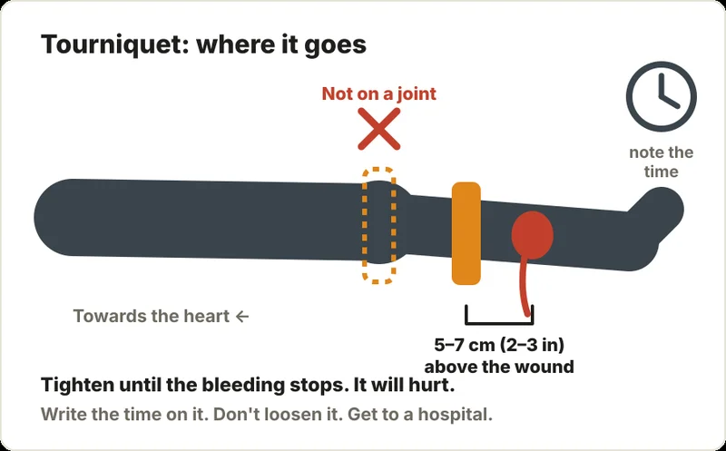
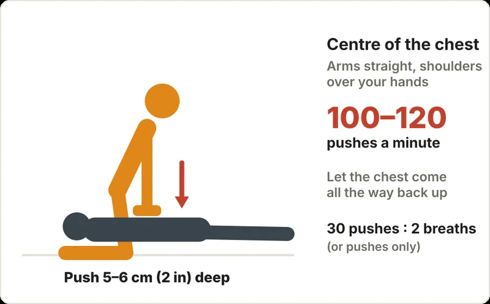
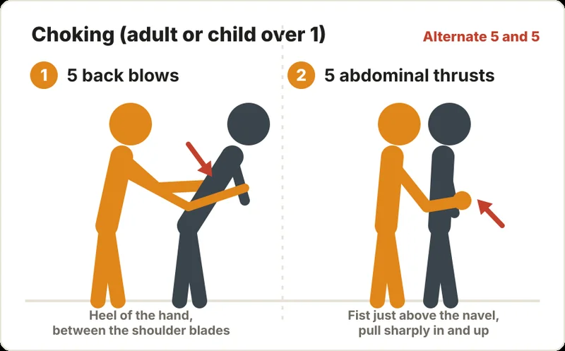
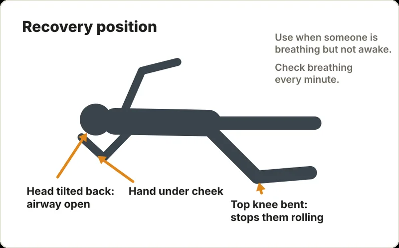
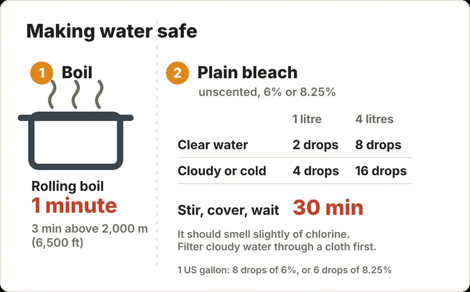
Aftergrid boots straight into Field Mode: one calm screen that puts every tool a click away.
Medical, Water, Food, Shelter, Repair, Power, Maps, Comms, Ask, Go-Bag. Big targets, plain words.
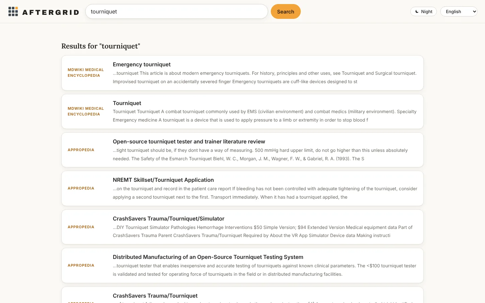
One box searches every book, manual and encyclopedia on the stick, in your language.
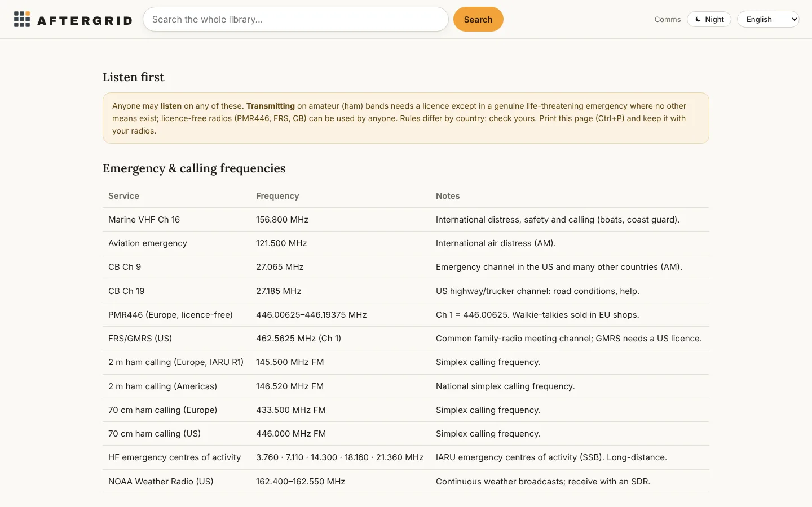
Emergency and calling frequencies for marine, aviation, CB, PMR446, FRS/GMRS, ham and NOAA weather, and what's legal to transmit.
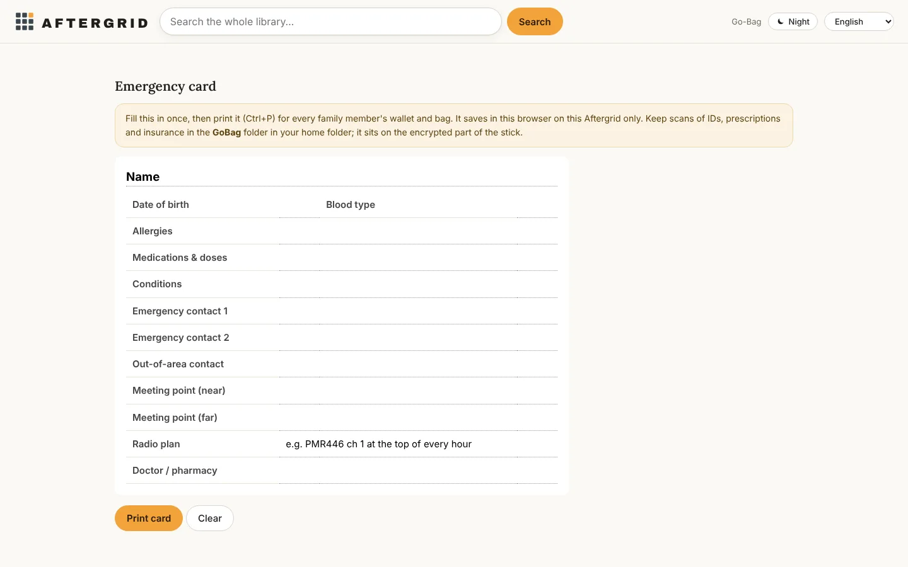
Fill in a card for every family member: allergies, medications, contacts, meeting points, radio plan. Print it. It's saved on the encrypted stick only.
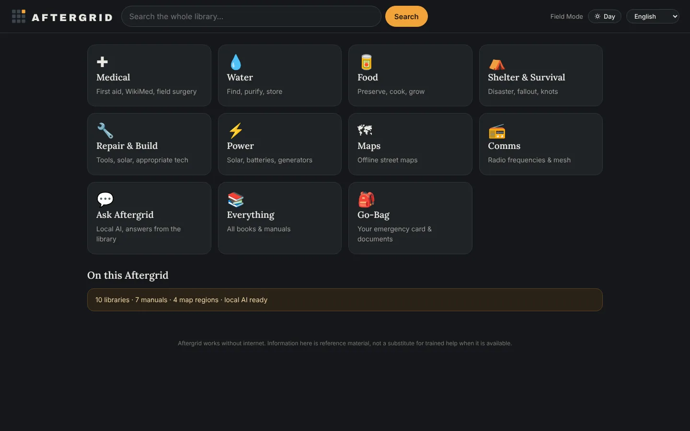
Dark, low-glare screens for night use, and a low-power mode to stretch a laptop battery.
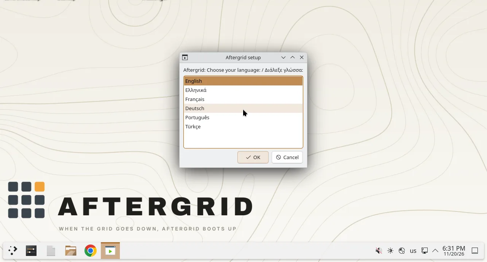
Pick a language, lock your saves with a password, create your account, connect Wi-Fi if you have it, add extra libraries. Done.
Street-level vector maps stored on the stick, with roads, rivers and towns. No tiles to download, no signal needed.
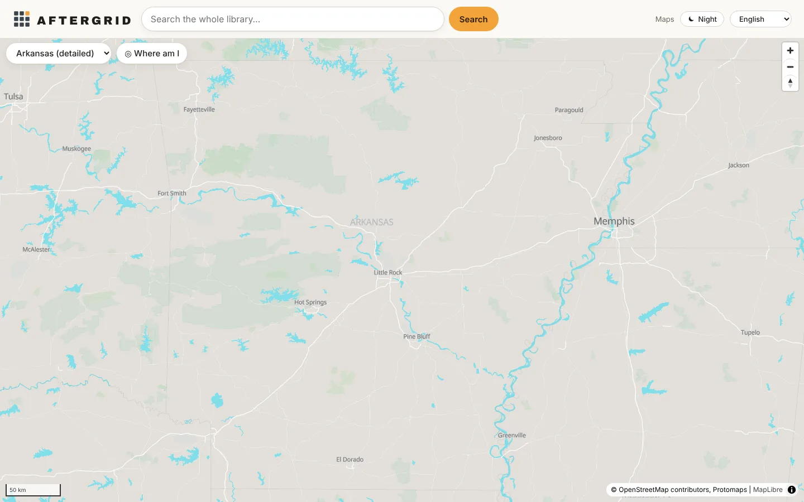
You buy a download, not a gadget. Use any USB stick you own, and make as many copies for your family as you like.
Instant download: the Aftergrid image (9.9 GB) and the Aftergrid USB Maker for Windows.
16 GB minimum, 32 GB recommended so there's room for Wikipedia and your saves.
Pick the stick, confirm, wait 10–25 minutes. It checks every byte when it's done.
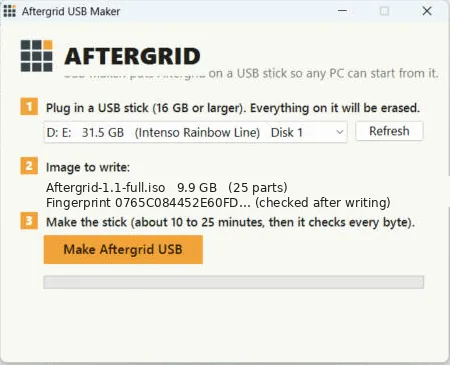
Plug in, power on, tap the boot-menu key (F12, F9 or Esc), choose the USB. Aftergrid starts. Nothing on the computer is changed.
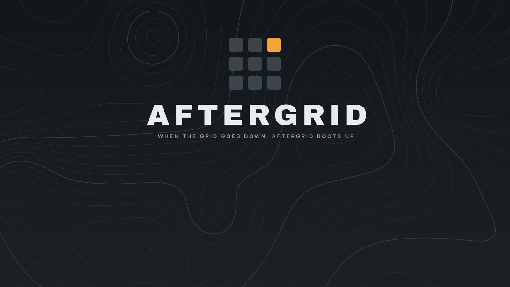
Emergencies don't send a warning. The time to make an Aftergrid stick is while the internet still works.
The installer that writes the complete Aftergrid OS, library, maps and offline AI to your USB stick.
The Aftergrid source is on GitHub: OS configuration, Field Mode, the offline AI setup, first-aid cards and the USB Maker. Fork it, add your region's maps, your own manuals, your language.
git clone https://github.com/meetjames24/aftergrid
cd aftergrid && ./fetch-content.sh
sudo ./build-aftergrid.sh full
Yes. Everything (the library, maps, search and the AI) lives on the USB stick and runs on the computer. Internet is only used if you choose to download extra libraries in setup.
Wikipedia's medical encyclopedia (WikiMed, with images) and a Greek Wikipedia summary edition are on the stick. All of English Wikipedia is a one-click download in setup: a 12 GB edition with every article's summary and key facts (fits a 32 GB stick), or the complete ~110 GB edition with images if you use a larger drive. Do it now, while you're online.
No. Aftergrid runs entirely from the USB stick. Take the stick out and the computer starts normally. Only the USB stick is erased when you make it.
It's a compact model that runs on a normal laptop processor, so it's slower and smaller than ChatGPT or Claude. But it answers from the library on the stick, shows its sources and flags numbers it can't find in them. Expect a few minutes for a full answer on an older laptop; the sources and diagrams appear first.
No. Aftergrid is reference material for when help can't be reached. The first-aid cards follow published guidelines (Red Cross, WHO, CDC, ERC and others) and each lists its sources. Always get trained help when you can.
Aftergrid boots Intel and AMD PCs. Apple Silicon Macs (M1 and later) can't boot it. You can still make the stick from a Mac or Linux with one terminal command, then use it on any PC.
Yes. Make one for every bag, car and family member.
Building it yourself means a Linux machine, about 20 GB of downloads and an hour of build time. $19.99 gets you the finished, tested image and the one-click Windows installer, and supports the project.
Twenty dollars and half an hour now, for the day nobody can look anything up.